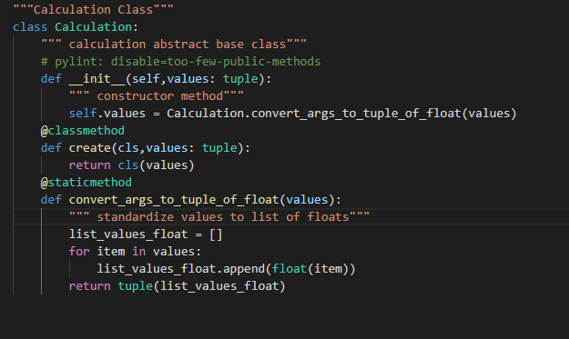
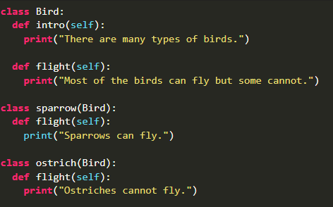

OOP Calculator
Abstraction is used when we want to show the client exactly what is necessary and nothing more. You can consider them much like blueprints for multiple classes. It allows you to create a set of methods that must be created within any child class built from the abstract class. A abstract class is a class that allows us to
implement methods as well as interfaces. While abstract methods, allows for methods to be later implemented on a child. In our calculator program, we had an abstract base class where we converted tuples to floats.

Note: This calculation.py file also had the class method which bounds that method to class. This class later gets used in our implementation classes (e.g. multiplication). Therefore, we do not need to show clients how they were converted or information that is not necessary such as the logic behind the math.
Encapsulaton is often used to make sure a class doesn't access a data directly unless it is suppose to. It is done by private and protected variables and are provided to others by getter and setter methods. In our calculator, the file calculation.py we protect the values after they get converted from tuple self.values = Calculation.convert_args_to_tuple_of_float(values)
to make sure they do not get accidently mannipulated in anyway because it would mean it could contain values aside from floats.
Polymorphism is when we have same function name but they have different implementations. When we inherit a class we can use method overriding to allow a different functionality to a inherited method.

Source: https://www.geeksforgeeks.org/polymorphism-in-python/
Inhertiance is done when one class inherits the properties of another class. This allows for the reusability of code and saves space. For example, in our calculator, we convert every tuple to float in calculation.py. Originally, the conversion was done in every operation class (multiplication, addition, divison, subtraction), however as we can see that would be very repetitive.
That is why we created calculation.py and placed conversion method there which later gets inherited by every operation class.